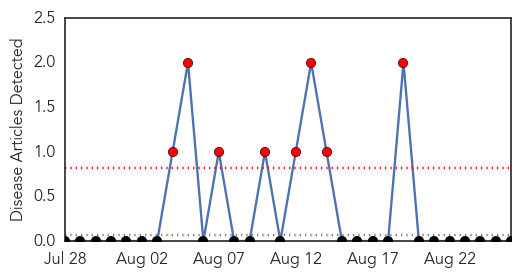
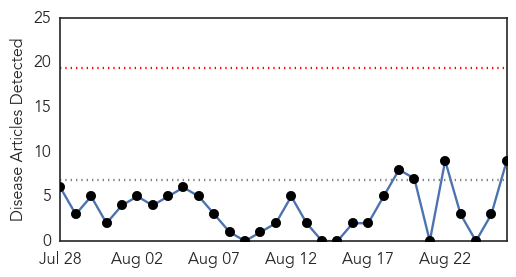
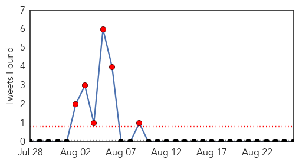
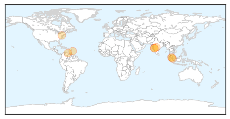
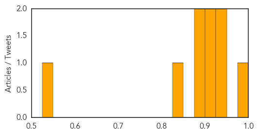

Yellow Fever
30-Day Web Trend
8 alerts, 0 warnings

30-Day Twitter Trend
0 alerts, 0 warnings

Article Locations

Article Confidences

Top Articles:
-
No articles found for Aug 26, 2014
Top Tweets:
-
No tweets found for Aug 26, 2014
Dengue Fever
30-Day Web Trend
0 alerts, 0 warnings

30-Day Twitter Trend
7 alerts, 0 warnings

Article Locations
Article Confidences
Top Articles:
- 0.999
- Doctors warn of diseases to watch out for in next 2 months
- 0.934
- Health D-G: Dengue cases decreasing in four states
- 0.933
- Atypical fever cases on the rise, doctors blame weather changes
- 0.915
- Warning over spread of dengue risk
- 0.911
- Venezuela: An Emerging Tropical Disease and Humanitarian Emergency?
- 0.884
- Clongen Laboratories, LLC expands tick and arthropod-borne illness testing by offering new diagnostic assays... -- GAITHERSBURG, Md., Aug. 26, 2014
- 0.882
- Prolonged hot weather brings diseases
- 0.839
- Low herd immunity ‘allows dengue to persist in Singapore’
- 0.526
- Construction Sites Guilty Of Breeding Mosquitoes
Top Tweets:
-
No tweets found for Aug 26, 2014